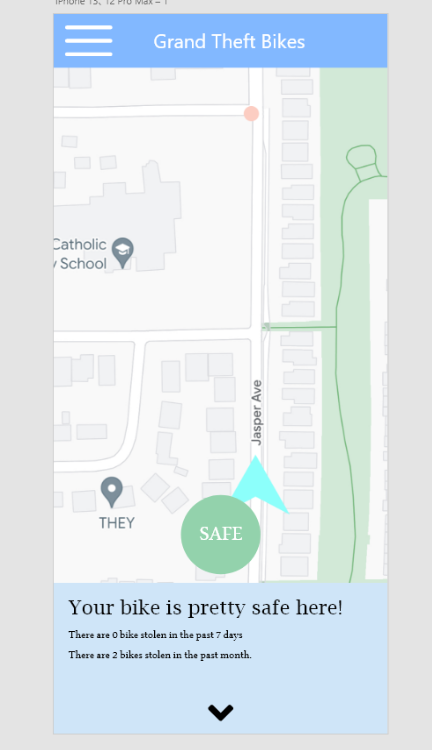

Grand Theft Bike
According to Open Ottawa, the official database of the City of Ottawa, there were 988 cases of bike thefts that happened in 2020. The primary purpose of this website is to demonstrate the situation of bike thefts around Ottawa in 2020 and to promote situational awareness among bikers who use their bikes as their primary method of commuting.
Bike thefts can be a real issue in the city of Ottawa, especially Downtown where bikes are stolen at almost every street corner! To help people prevent their bike from getting stolen and know where the safer spots to leave it unattended are, we have provided data that shows where and when bike thefts most often occur. We indicate which are the top 5 most risky neighborhoods for bikes. Each of those neighborhoods have their own distinct color on the map along with bar charts and histograms that add more information about them. Now, you’ll be able to ride your bike around Ottawa with much less stress for the safety of your bike!
The link to the mapBy browsing the map, you will get to know the top 5 neighbourhoods where most bike thefts happened in 2020. If the ALL button is selected all bike thefts from 2020 and the location of it. Only the top 5 are highlighted but all points are shown.
Above is another bar graph that shows the time of the bike thefts in collective times of 4 hours. Such as 12am to 4am, 4am to 8am, 8am to 12pm, 12pm to 4pm, 4pm to 8pm, and 8pm to 12am.
Below we have included the drafts which give an idea of the process we went through before finalizing our visualizations.
